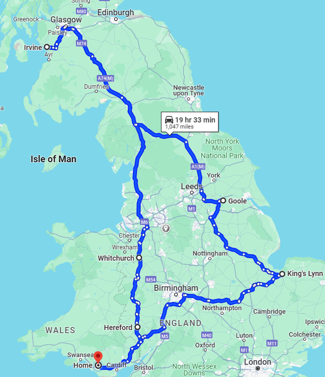
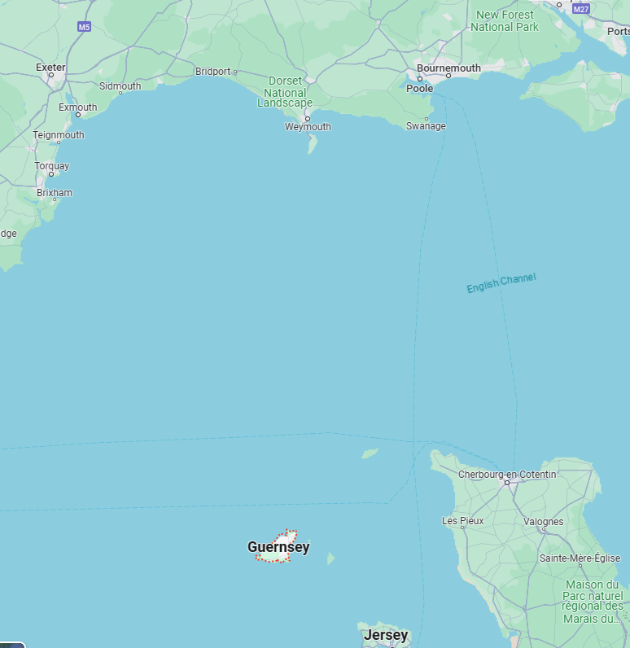
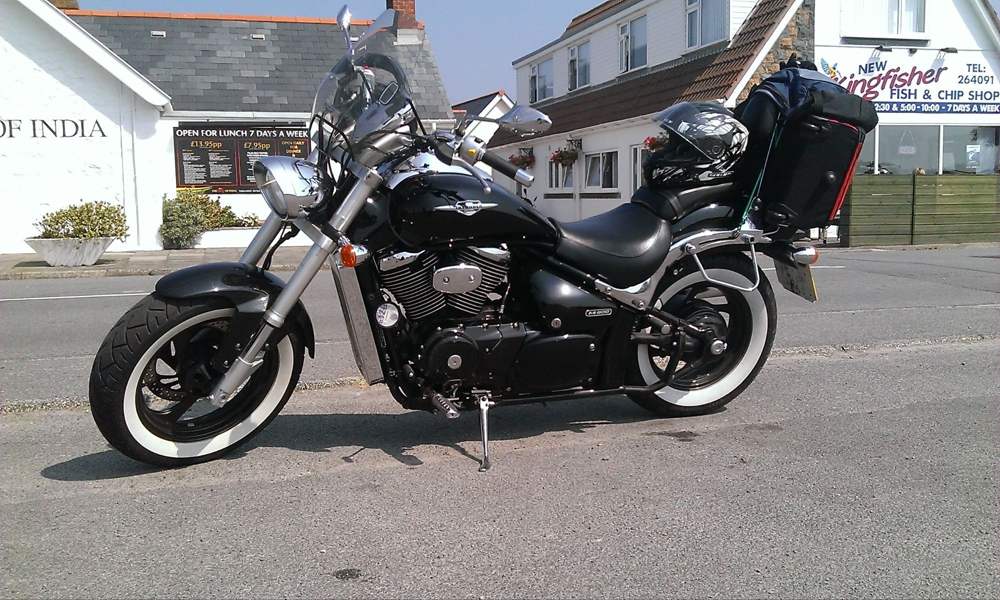

Suzuki M800 Intruder
My first bike after a break of about 15 years
I was so glad to get back on a bike, although I was nervous when I went to test-ride this one. It had been so long that I found myself wondering: is the clutch on the left or the right? Which side is the rear brake?
There was no need to worry. I threw my leg over, selected first gear and off I went.
I did manage to scrape a footpeg on the very first corner, though…
For my first proper trip, I decided to combine the bike with a few IT jobs for my previous employer. It would be a three-day, two-night journey: east to King’s Lynn, north to Goole, then northwest to Irvine in Scotland, followed by the mammoth ride home.
According to Google Maps, the whole trip covered 1,027 miles. By the time I reached Irvine, I was beginning to regret my decision.
Never mind. No pain, no gain.

I certainly put some miles on this bike. Despite the thumping V-twin engine, it was a really enjoyable ride.
I also rode it to Guernsey quite a few times, usually for work. Taking a bike on the ferry was so cheap that it made more sense than taking the car. The bike would normally be fully loaded and, occasionally, my son Liam came along too. We would either stay overnight in a hotel or buy a day-return ticket and blast home in the early hours of the morning.

A trip to Guernsey wasn’t quite the idyllic excursion most people imagined. It began with a 2 a.m. start so I could reach the ferry terminal in time for the 6 a.m. crossing. If I was travelling alone, I would usually buy a day return. That meant catching the 6 a.m. ferry out, taking the 8 p.m. ferry back to the UK and then riding home—eventually stumbling through the back door at about 3 a.m.
Urgh!
On the old fast ferries, you could normally find a patch of floor somewhere and grab a couple of hours’ sleep. I also found that sleeping was a good way to avoid the inevitable seasickness.
There are no such luxuries on the newer ferry, though—just row upon row of forward-facing seats.
When the latest fast ferry was introduced, it wasn’t really equipped for carrying motorcycles. A crew member strapped the bikes down, but during one crossing—I’m guessing—their wheels slipped out from underneath them. The bikes all fell over onto one another.
Fortunately, there wasn’t too much damage. Sometime after that, the floor received a coating of gritty paint and proper motorcycle wheel clamps appeared.
